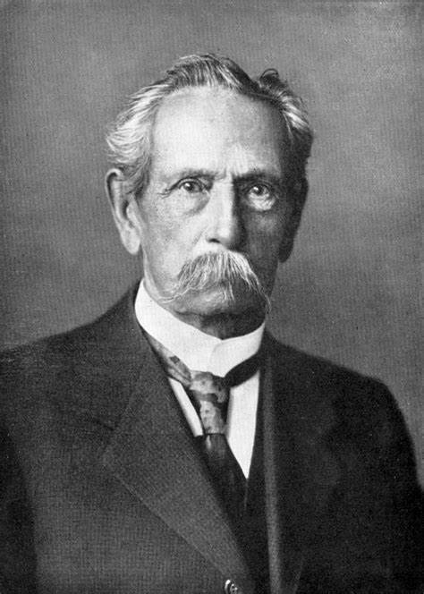

Henry Ford costuma receber o crédito pela primeira linha de montagem de veículos, mas o primeiro carro a combustão veio da Alemanha em 1886. A discussão sobre quem foi o inventor do primeiro carro do mundo é um pouco polêmica. Entre os diversos nomes que costumam levar os créditos, está o alemão Karl Benz — cujo nome também deu origem a um das gigantes do meio automotivo: a Mercedes-Benz.
Karl Benz, nascido em 25 de novembro de 1844 em Karlsruhe, Alemanha, é uma figura central na história da indústria automobilística. Depois de estudar na Polytechnic School de Karlsruhe e na Universidade de Karlsruhe, Benz iniciou sua carreira como designer de motores. Em 1885, ele patenteou o que é considerado o primeiro automóvel movido a gasolina, o Benz Patent-Motorwagen.
Apesar das críticas iniciais e da desconfiança sobre a viabilidade dos automóveis, Benz persistiu em desenvolver e aprimorar sua invenção. Ele fundou a Benz & Cie. em 1883 para fabricar e vender seus veículos, tornando-se assim a primeira empresa de automóveis do mundo.
Ao longo dos anos seguintes, Benz continuou a inovar, introduzindo novos modelos e melhorias em seus carros. Seu sucesso inspirou outros inventores e empreendedores a entrar no campo emergente da indústria automobilística.
Karl Benz faleceu em 4 de abril de 1929, deixando para trás um legado duradouro. Sua contribuição para o desenvolvimento dos automóveis foi monumental, não apenas pela invenção do primeiro automóvel movido a gasolina, mas também pelo impacto que sua inovação teve na forma como nos deslocamos e interagimos com o mundo ao nosso redor.
|

Karl Benz |
Levando conta que o primeiro carro foi inventado por ford, aqui estão algumas caracteristicas do primeiro carro inventado na historia:
Patenteado em 29 de janeiro de 1886, o primeiro veículo mais parecido com um carro moderno a combustão foi criado pela Mercedes-Benz: o Benz Patent Motorwagen (algo como carro motorizado patenteado Benz em tradução livre).
Atualmente, o primeiro carro da Mercedes fica no museu da marca em Stuttgart, na Alemanha.
Na época, o veículo ganhou o apelido de “carruagem sem cavalos”.
Quando falamos de automóveis modernos, o carro da Mercedes também sai na frente por vir com o primeiro motor de combustão interna a gasolina.
Embora o Benz original fosse um veículo de três rodas, o veículo logo ganhou melhorias e em 1891 virou um carro de quatro rodas (via: olhardigital)
O primeiro carro da história é amplamente atribuído ao Benz Patent-Motorwagen, desenvolvido por Karl Benz em 1885. Este veículo é reconhecido como o primeiro automóvel movido a gasolina e é considerado um marco significativo no desenvolvimento da indústria automotiva.
O Benz Patent-Motorwagen era uma máquina simples e rudimentar, composta por três rodas e um motor de combustão interna de um cilindro. Seu design compacto e leve permitia que fosse operado por uma única pessoa. O veículo tinha uma velocidade máxima de cerca de 16 km/h, o que era bastante impressionante para a época.
Em 1886, Karl Benz patenteou formalmente seu invento, tornando-se o primeiro veículo motorizado a ser patenteado. Ele fundou a Benz & Cie. para produzir e comercializar seus carros, estabelecendo assim a primeira empresa automobilística do mundo.
O Benz Patent-Motorwagen teve um impacto significativo na sociedade da época, mesmo que inicialmente tenha sido recebido com ceticismo. Sua invenção abriu caminho para uma nova era de transporte pessoal, mudando para sempre a forma como as pessoas se deslocavam e interagiam com o mundo ao seu redor.